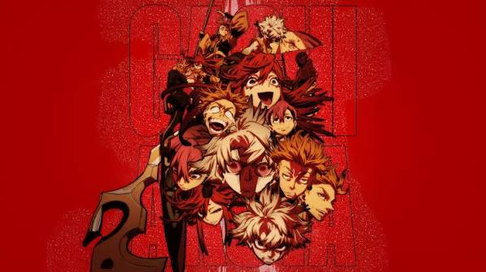
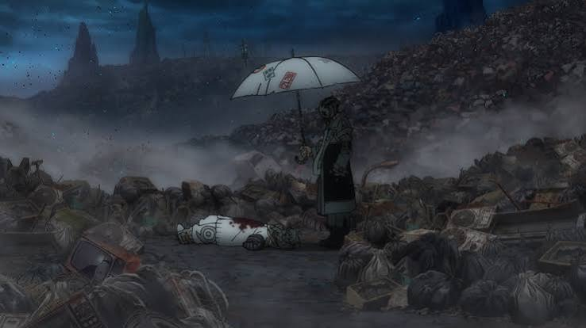
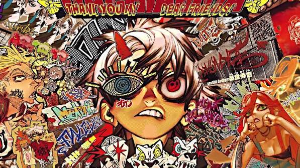
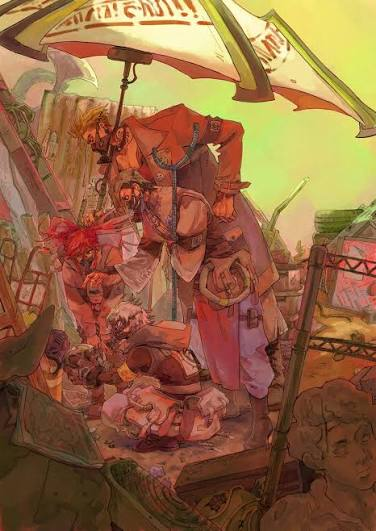

Anime consistently pushes the boundaries of what is visually possible on screen, offering a stunning variety of art styles that live-action simply cannot replicate. Because the medium relies entirely on illustration and animation, creators are not bound by the physical limitations of cameras, real-world lighting, or practical effects. Instead, every single frame is a deliberate artistic choice, allowing studios to craft hyper-stylized worlds that feel entirely unique and deeply immersive. This boundless freedom gives rise to visual storytelling that can shift seamlessly between delicate realism and explosive abstraction. A perfect embodiment of this limitless artistic potential is Studio Bones’ adaptation of Kei Urana’s Gachiakuta, which brilliantly showcases how anime can weaponize its visual style to elevate its core narrative.
Finally, anime’s visual artistry shines brightest in its approach to character expression and action choreography, which Gachiakuta pushes to its absolute limits. During high-stakes combat or moments of intense psychological strain, the character designs intentionally break their standard models. The animation warps perspectives, exaggerates facial expressions into terrifying, impassioned snarls, and bends the rules of physics to convey the raw, unfiltered impact of a punch or the sheer desperation of a survivor. When characters wield their "Vital Instruments"—ordinary pieces of trash awakened into powerful weapons through deep emotional attachment—the visual effects explode with a dynamic, stylized energy that completely overtakes the screen. It is this sheer visual audacity, the willingness to prioritize emotional truth and kinetic impact over strict realism, that makes anime the ultimate form of visual media.


Furthermore, anime excels at meticulous environmental storytelling, and Gachiakuta uses this strength to find striking beauty in absolute decay. The setting of the "Ground"—a toxic, polluted wasteland buried under mountains of discarded trash from the wealthy society floating above it—could easily have been a drab, visually muddy backdrop. Instead, the animation team meticulously renders the junk with incredible, almost suffocating detail. Piles of broken electronics, rusted metal, and shattered glass are drawn with such care that the environment feels claustrophobic yet visually mesmerizing. By utilizing a highly saturated, neon-tinged color palette against the dark, grimy backgrounds, the visual artistry forces the viewer to see the hidden value and tragic beauty in discarded things, perfectly mirroring the central theme of the entire series.
Anime consistently pushes the boundaries of what is visually possible on screen, offering a stunning variety of art styles that live-action simply cannot replicate. Because the medium relies entirely on illustration and animation, creators are not bound by the physical limitations of cameras, real-world lighting, or practical effects. Instead, every single frame is a deliberate artistic choice, allowing studios to craft hyper-stylized worlds that feel entirely unique and deeply immersive. This boundless freedom gives rise to visual storytelling that can shift seamlessly between delicate realism and explosive abstraction. A perfect embodiment of this limitless artistic potential is Studio Bones’ adaptation of Kei Urana’s Gachiakuta, which brilliantly showcases how anime can weaponize its visual style to elevate its core narrative.
